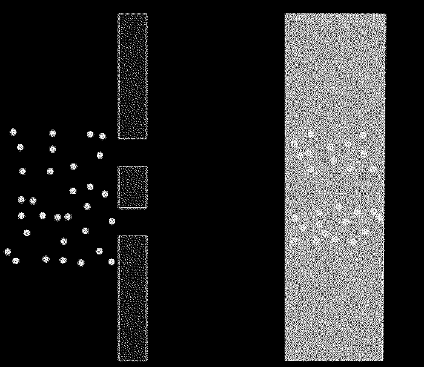

| ABSTRACT | - |
|---|---|
| - | - |
Early in The Ethics Spinoza argues that there is only one substance, which is absolutely infinite, self-caused, and eternal. He calls this substance “God”, or “Nature” —Deus sive Natura. The Bible mentions that God reveals himself in nature. To see His creation is to see a piece of Him. As it says in Romans 1:20, “For since the creation of the world God’s invisible qualities—his eternal power and divine nature—have been clearly seen, being understood from what has been made, so that people are without excuse.”
So why do we make such an effort to exclude nature from our lives, in the concrete boxes we call homes, the plastic wrapped goods we call food ? Where did human intervention stop having a sense of the presence of Spinoza’s “substance”, while all that remains is the newtonian tangibility in the materiality of our constructed spaces? What materials can we construct our spaces of? Is there a ritualistic attention we can provide to a space? We are seeing more and more how the alteration of food, for instance, is making us sick - isolated nutrition pills, genetically modified vegetables, added hormones - the list goes on about human interventions on original manifestations.
I would like to explore on a spiritual level the effects of nature and space on my being. I will undergo a series of ritualistic interventions, in search of a new path, the line between the yin and yang, to explore the space within myself and manifest outside of myself, using the elements of nature to rid myself of layers of societal comfort to find a new truth.
| CHAPTER 1 | [ THE VOID OF RELIGION IN TODAY'S SOCIETY ] |
|---|---|
| HOW CHRISTIANITY COMBINED SPIRITUAL PRACTICES | - |
Before Christianity there was paganism. During and after the Middle Ages, the term paganism was applied to any unfamiliar religion. Paganism seems to be a collection of various similar looking “religions” which are based on nature. There are still communities today in Africa or even Eastern Europe that you could call pagan. What is interesting about these religions is that they are very similar yet completely different, the specific rituals observed differ from region to region but almost all of them seem to have a few key elements that come back. Things like dancing, rhythmic music, masks, natural elements and materials, a close relationship with nature, initiations and sacrifices. Roman paganism however seemed to have focused mostly on deities and paying your respects to them, not because you “feel” but because if you don’t then something unfortunate would happen to you or your family; they had deities for roads, skies, the sun, the moon etc. Christianity offers a very different concept, because it does not matter what you do because “God” would still love you and if you repent your sins then you will have a place in heaven. I can understand how this concept gained popularity since the alternative only offers fear if you do not participate.[1]
Christianity issued that there is only one god and that your faith and sacrifice has to come from within, as opposed to sacrificing animals and idolizing statues. To battle the evil with the good within yourself, which emotions are bad and which are good[not to do evil], to love each other and live a proper life and be rewarded with eternal life in heaven. There is a strong basis of Christian values in Western civilization’s approach to emotions today that many are not aware of because human or animal sacrifice, for instance, was not a strange concept in pagan practices, it is in fact because of Christianity that Western civilization is a lot less barbaric than it used to be. However i do believe there are many pagan practices of great value which were later disregarded by Christianity as heresies and therefore leading to the persecution of pagans. Maybe not Roman pagans, but pagans in general had a much closer relationship to nature and interestingly enough in the Bible there is mention of god to be found in nature so i personally believe there have been many translation mistakes in how to interpret the Bible in the course of time. Just imagine if you are a “superhuman” being and you have to explain to rather simple peasants what we nowadays understand about the scientifically measurable vibrations of emotions and how you can actually choose to have a particular emotion by simple visualization exercises - I can imagine that it would be difficult to explain such concepts if all you understand is several deities that will punish you if you are not paying your respects. However, the big mistake I believe Christianity made in throughout history is to completely expel all pagan practices, because they did not understand that many pagan practices actually contribute to the message that Christianity is trying to teach.
Christianity also gained popularity because Jesus was a healer. Jesus was strangely enough not the only healer alive in those days, so the idea that he could heal people was not so strange to the establishment; what made him different was that he was just a carpenter[x]. It seems that Jesus lived a rather normal life and then he went traveling and found a sect in the mountains that had some ideas about the end of the world as we can see in the Dead Sea scrolls and combined these ideas when he travelled back. However early Christianity seemed to have been not that bad of an idea. We can see in Quantum mechanics, through the double slit experiment, that it is the observer itself that influences whether a photon behaves as a wave or a particle that there might be a field (called the zero point field) where subatomic particles behave very differently then from what we know atoms, electrons and neutrons to behave like. The double slit experiment demonstrates that little particles of matter have something of a wave about them, and suggests that the very act of observing a particle has a dramatic effect on its behavior.
The double slit experiment goes as follows, imagine a wall with two slits in it. Imagine throwing tennis balls at that wall. Some will bounce off the wall, but some will travel through the slits. If there is another wall behind the first, the tennis balls that have travelled through the slits will hit it, so imagine that the tennis balls are wet with ink. The ink will mark all the spots where a ball has hit the second wall and you would expect to see two strips of marking roughly the same shape as where the slits are. In the image below, the first wall is shown from the top, and the second wall is shown from the front.
Now imagine shining a light at a wall with two slits. As the wave passes though both slits, it splits into two new waves, each spreading out from one of the slits. These two waves then interfere with each other like water ripples. Where the ripples overlap will be the brightest of light and at other points the ripples cancel each other out and you end up with a stripe pattern.

If you throw a tennis ball it will go through one of the slits and not end up as a wave pattern, however on the quantum level this is not the same. Imagine firing electrons at this wall with the two slits, but block one of those slits off for the moment. You will find that some of the electrons will pass through the open slit and strike the second wall just as tennis balls would. When you open the second slit you would expect two rectangular strips on the second wall, as with the covered with ink tennis balls, but what you actually see is very different, the spots where electrons hit eventually appear as a wave pattern. You might think that the electrons interfere with each other, however even when you fire the electrons one by one there is still a wave pattern that comes out of it. Because they saw the wave pattern they decided to put a detector by the slits to see which slit an electron goes through and the strange thing about this is that the pattern then changed in to a pattern that you would see when you throw tennisballs through two slits. Somehow, the very act of observation changed the behaviour of the electrons. They concluded that there is a field of possibility before matter takes a final form and the act of looking changes this. This field of possibility is called the zero point field.
So to think that there is a sort of “net” that underlies the very fabric of reality that transcends concepts like space and time and translate that to a graspable idea of “god” is not that far off. What (Roman) paganism was missing however was the intention of the self, here is where faith in Christianity comes in. In order to believe that “God” will save you and fill you with love, you need to have faith that he will, while in fact you are doing that yourself by believing in it. What Quantum mechanics shows is that the act of observing is making matter take a form - which means that matter is in flux. I can see how Jesus gained popularity because he gave people something nonmaterial, something what you can create with your mind, because you can create happiness and love and peace within yourself if you had faith and faith is really nothing more then believing in something as if it is there before you had any proof, which in the laws of Quantum mechanics actually works as manifesting by observing. The act of observing is making matter take a form, that means that matter is not fixed as it is so we as humans have influence on this field, we as humans can create what is not there before, so to believe that the spirit of Christ will fill your heart with love is in fact you yourself creating it by believing.
Modern day business videos on youtube have a similar practice where you visualize what you want to achieve. There was even a study[x] done where professional basketball players were put in two groups where one group visualized their training and another group actually trained and in the end the results were similar to each other. A doctor called Joe Dispenza claimed he cured his own spine with meditation and basically mentally operating himself from the inside. Given these modern day examples, the idea of inviting the spirit of Christ by believing in him is not so far removed from secular society as we might think.
The Roman empire, that eventually eliminated all pagan practices, was not a very religious based enterprise, it was more an army based enterprise and whatever religions were around they would accept as long as they pray for the army. In the beginning of Christianity, christians were persecuted, a few centuries later Constantine legalized both religions and a few centuries later pagans were persecuted. Because of this transition period a lot of pagan rituals are actually within Christianity. For starters Jesus was not born on 25 December and Santa Klaus is based on the Norse Krampus and Christmas is based on Saturnalia which was a pagan festival which covered roughly the fourth week of December. The Roman god Saturn celebrated by the festival was the god of the harvest, and Saturnalia was about conspicuous consumption of food and drink. During its celebration no prisoners were executed, and some were granted release. Masters served their slaves at table during one point of the festival, and a slave was elected to serve as the King of the celebrations. Public feasts were held, and gifts were exchanged, some of them to public associates as jokes, while gifts given privately to family and friends were often of a more substantive nature. If you have ever seen Disney’s “The Hunchback of Notre Dame” in the scene where Quasimodo was held up in a chair? That is saturnalia. Even the swaying with the thurible is not a real chris- tian ritual, the romans combined all sorts of rituals to make everybody satisfied, while centuries later they fell in line under one religion for political reasons.
Christianity split up in a few sections like Orthodox in 1053 and protestant in 1517 mostly because they did not agree with the direction the catholics were taking. Martin Luther pointed out the corruption of the church and what is not supposed to be in the religion, the concept of purgatory is not mentioned in the original scriptures for instance and has been invented by catholics to probably enforce power over people. The loss in the christian faith has only increased in the last centuries mostly because of this corruption and the allegations of sexual misconduct by the priests. The whole idea that there is a man in the sky that will punish you if you are gay or use curse words does not seem to appeal to people anymore. I want to argue that years of changing the very essence of Christianity has completely obstructed what it meant to teach us in the first place. This resulted in people moving away from established religion and lean more towards a new-age concept of spirituality.
New-age spirituality seems to consist of concepts like the law of attraction, visualization, visualization based meditation or self-hypnosis, yoga, crystals and self help books. The law of attraction consists of the idea that whatever you feel you will attract and that this is the reason why prayer does not work because you ask it from a place of need rather than a place of having it already. The idea is that like attracts like so when you would feel abundant you would attract abundant people and therefor maybe becomes actually abundant by an opportunity that presents itself. Visualization is an exercise where you visualize the life you want to have in detail for instance or you visualize your project finalized and getting praise and that this emotional state will attract this future outcome to you. Self-hypnosis is a guided meditation where you travel in a storytelling type way to your childhood for instance and use symbols or representations of painful concepts to eradicate these traumas from your psyche. Crystals are stones that seems to carry a certain wavelength of energy and self help books speaks for itself. Initially there does not seem to be something wrong with this movement, it acts as if it is without religion and based in quantum mechanics, so science, but science is really nothing more then what you can see or measure with your own eyes, so what you can prove that works. In Catholicism we saw power, money, followers (mostly out of fear), concepts stolen from other areas and a piece of truth that does actually work.
In today’s new-age movement we see a similar pattern emerge. The platform or format that is “stolen” originates from business, the visual language is from the business world because of how the conferences look like. Take for instance Tony Robbins, you pay 5000 Dollar for a ticket to attend a conference that really does not carry that much real information. The amount of the ticket price also comes back to money. Self-help books are expensive and often they reference each other so you keep buying them and reading them but never actually doing something. Followers are usually people that are looking for something to give their lives meaning, they come out of fear to these conferences because of the fear of missing out or being stuck in the life they have build for themselves and want out and then we have the small piece of truth, similar to the double slit experiment in quantum mechanics. It seems like the same structure the catholics used to gain money and power over people. What do you do when you want to join the game of money and power? You become a priest. What do you do now if you want money and power? You write a self-help book. Meditation does seem to be a proven way to help with many ailments. What I find difficult about most meditation techniques and versions you can find within the realm of new age spirituality is that none of them are like the original teachings of the Buddha. This is exactly what happened to Christianity, it changed so much over the years that only a small fraction of the actual message is left and therefore creating new culprits.
To illustrate my point there was a research done by Anouk Visser and Roos Vonk[ x ] about spiritual superiority among this group of nowadays spiritual leaders and guru’s and in their abstract you can find that ”Spiritual Superiority scores were consistently higher among energetically trained participants than mindfulness trainees and were associated with supernatural overconfidence and self-ascribed spiritual guidance. It was correlated with self-esteem and, more strongly, with communal narcissism, corroborating the notion of spiritual narcissism. Our results illustrate that the self- enhancement motive is powerful and deeply ingrained so that it can hijack methods intended to transcend the ego and, instead, adopt them to its own service.”
This is exactly what went wrong in New Age spiritual movements of today, because you don’t work on the ego if the work itself becomes the ego, which is what seemed to have happened in the self help New Age spirituality movement because then you “are” a writer of a self help meditation book.
What was expected of me? If I decided to embody that label ‘graphic designer’ was I supposed to understand typography, was I supposed to know all the main references of graphic design? What were the skills was I supposed to master? How did I have to change in order to adapt and survive to this new environment? In order to fit into these expectations which were put on me once I was admitted into this privileged and selective space?
‘The Graphic Design department educates students to become critical thinkers and versatile practitioners who develop outstanding concepts for visual communication. Graduates excel in their professional careers through their extraordinary conceptual and visual abilities, extensive knowledge of the profession and the world, strong technological curiosity and highly developed social engagement.’
“Critical thinkers” “outstanding concepts for visual communication” “extensive knowledge of the profession” “strong technological curiosity” And “highly developed social engagement”…. What is the curriculum that hides behind these terminology? ‘strong technological curiosity’ ‘critical thinkers’ ‘highly developed social engagement’… It is clear that this marketing of the study program is necessary to attract more students to join or apply for the course, yet what are the expectations of these students afterwards? The student has immediately become a consumer of vendible educational commodities, primarily courses credits, certifications and degrees . In which once you have gone through the ‘educational’ process ‘Graduates excel in their professional careers through their extraordinary conceptual and visual abilities, extensive knowledge of the profession and the world, strong technological curiosity and highly developed social engagement.’ How are they going to make sure their graduates appear in such a way? The curriculum must be strictly followed otherwise the whole educational campaign of the institution will loose credibility. Universities today are large systems of authoritative control, standardization, gradation, accountancy, classification, credits and penalties . Mbembe talks about decolonizing knowledge, meaning we need to decolonize the systems of access and management insofar as they have turned higher education into a marketable product, rated, bought and sold by standard units, measured, counted and reduced to staple equivalence by impersonal, mechanical tests and therefore readily subject to statistical consistency, with numerical standards and units. Our education has become a ‘marketable product’ it has become a commodity something that needs to be consumed. When the individual becomes part of such a relationship with its education he becomes a product himself, He becomes something to be consumed he takes an active role in this same marketable dynamic between himself as a designer an the world around him. According to Mbembe to decolonize implies breaking the cycle that tends to turn students into customers and consumers. These tendencies are inherent in an institution run in accordance with business principles: the students have become interested less and less in study and knowledge for its own sake and more and more in the material payoff, or utility, which their studies and degree have on the open market. In this system, the student becomes the consumer of vendible educational commodities, primarily courses credits, certifications and degrees.
This process of becoming seemed so important at the time and now looking back at it I try to understand why. Becoming something that I was not yet, the impossible quest that expected me to change, in order to become what? Somehow there was something that pushed me to achieve something greater than me. This was the problem, my quest was doomed to fail. Somehow what I valued is what I would become, the pressure was lying on me on changing and becoming who I was supposed to be, but who dictates this? Who decides what the ideal version of a designer at KABK. Education exists and lives by a capitalist discourse where the only visible option is to consume and being consumed. (Marxist commodities, exchangeable products? How to create Value + The political body) I was about to become something greater than me, a version of me that would hold value in, finally I would become exchangeable, consumable in the market and branded by the academy I that educated me. I would exist the institution five years later and I would become another critical successful student, another product of their marketing campaign.
Because there is a curriculum and certain requirements to become a designer at KABK, There is an authority that dictates the form in which people should adapt in order to graduate. This authority dictates what a successful student looks like, and reinforces this idea that to be a successful designer you have to deliver what is expected from you as a student and nothing more. This is a very narrow way of experiencing education since discussion only can go in to directions where the authorities interest resides.
Your body as soon as you are born into existence becomes a political body . Subjectivity is a discursive production, that is, discourse as a regulated way of speaking/practice, enables a speaking person to come into existence. What this means is that your body and your subjectivity is produced within a certain narrative, within a discourse and according to Foucault more specifically within a power structure. Foucault in the myth of the interior states that the subject is entirely historically determined, thus the subject is wholly and only the product of history. You do not actively, autonomously form your own identity, you can only discursively produce it from existing subject positions. Disciplinary technologies produce ‘docile bodies’ which can be subjected, transformed and improved. It is in this theoretical framework that I see myself becoming a subject, a graphic designer. It is not through neutral processes that I have become a graphic designer but through a process dictate by power and discourse on how I should be that I have become a graphic designer, which fit into the normative standards of KABK.
A commodity appears, at first sight, a very trivial thing, and easily understood. Its analysis shows that it is, in reality, a very queer thing, abounding in metaphysical subtleties and theological niceties. So far as it is a value in use, there is nothing mysterious about it, whether we consider it from the point of view that by its properties it is capable of satisfying human wants, or from the point that those properties are the product of human labour. It is as clear as noonday, that man, by his industry, changes the forms of the materials furnished by Nature, in such a way as to make them useful to him. The form of wood, for instance, is altered, by making a table out of it . There relied graphic design, at the end of the journey, I never considered myself capable of dealing with graphic design until I reached the end of the journey, but I never seemed to move forward no matter how hard I worked.
I guess what I spent most of the time trying to understand is: what is valued in graphic design? Who defines what is valuable? What are the processes that actually create value in graphic design?
These questions dictated what kind of work I would be making. Somehow this idea of not being yet, was pushing me to look for the elements that would make me become. In a way it was thriving me to become, it was making me hungry for change, for the new, for learning what I was not familiar with. Appadurai illustrates how people are constantly aiming towards aspirations in daily life , but situates this in the capacity to aspire. This navigational capacity, he argues, is less developed in poorer communities, because of the lack of examples on which imagination thrives . For the poor to have a voice, they need to have the capacity to aspire and as such, the habit to imagine possibilities instead of external probabilities. I guess becoming a commodity myself was the only thing I could imagine to be. The capacity to aspire to something else outside of capitalism appears to be a somehow absurd and impossible task. ‘It is easier to imagine the end of the world than the end of capitalism’.
I considered this as very essential for my growth and understanding of my practice yet at the same time it was undermining who I was at the time and the things I knew, making my goal something distant from me where my value as a graphic designer was, the value I didn’t have yet and therefore the value I was not able to communicate through my work. In one hand I was constantly looking for things around me that reminded me of what I was not capable yet of doing, I could not stand this feeling, I had to figure it out in order to acquire this value, this skill. In the other hand this feeling was making me weak, I did not see value in myself nor the work I produced, and this is something that would later end up breaking me.
| CHAPTER 2 | Getting back to the essence |
|---|---|
| — | — |
| CHAPTER 2 | Getting back to the essence |
|---|---|
| 2.1 | wtf is dit |
| CHAPTER 2 | Getting back to the essence |
|---|---|
| 2.2 | Good work, Bad work & Work |
| CHAPTER 2 | Getting back to the essence |
|---|---|
| 2.3 | A Desire to be / Embodying failure |
| CHAPTER 2 | Getting back to the essence |
|---|---|
| 2.4 | Fear an authoritarian educational system |
| CHAPTER 3 | ACHIEVEMENT SOCIETY |
|---|---|
| - | - |
| CHAPTER 3 | ACHIEVEMENT SOCIETY |
|---|---|
| 3.1 | In pursuit of satisfaction |
| CHAPTER 3 | ACHIEVEMENT SOCIETY |
|---|---|
| 3.2 | My practice as a fetish |
| CHAPTER 3 | ACHIEVEMENT SOCIETY |
|---|---|
| 3.3 | Achievement subjects |
| CHAPTER 4 | THE END OF MY PRACTICE |
|---|---|
| - | - |
As I started my research on this topic I did not stop struggling with desiring such a thing. The reasons? Is good for me? Is it pleasurable? Is my attention simply drawn to it? Will it be an important part of my well-being? Will it give me a rewarding feeling? And the answer is probably Yes, to all of these questions. However the problem remains, what happens when on does not desire, because of fear and exhaustion, one is simply unable to focus his energy on desiring. He is exhausted and partly driven by fear. Where do these come from? Well in this essay I will explore some of these aspects in order to understand better my relationship with myself, as I become part of society as a Graphic designer.
In order to tackle these large themes the thesis will begin with my failed second year at KABK and how the idea that my work was not good enough became a personal failure and a personal belief of not being good enough. Graphic design became something too big to ever be mine and this was the start of obsession with it. My practice became a fetish because it became an unachievable object of, producing good work became essential to my validity as an individual it became the centre of my existence and a desire for the best version of myself had to be reflected in the projects I was able to produce. My thesis is an investigation on the structures within which I have been constructing myself and my practice of Graphic Design.
It looks into both the role of the institution which I work in and produce my work within but also how I the subject which produces work navigates this space and the power structures which prescribe the work I produce. This investigation raises various questions such as what is success? What is bad and good work? Do I desire Graphic Design? How do educational system become authoritarian? Is there a way out of this? When did my practice become a fetish? Can we find new spaces within which to produce work? Who decides what my practice is? For whom am I working? These will all be guiding questions, which will be answered and investigated throughout the thesis.